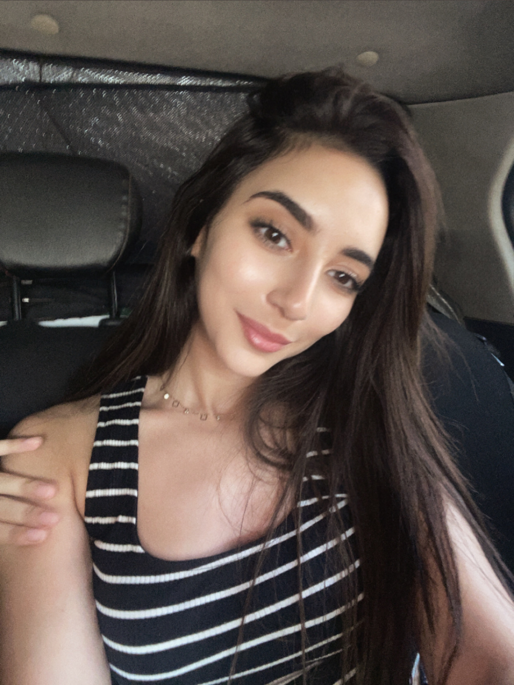

Lena Bessa
Technologies du handicap · IHM · Accessibilité
À propos
Je développe des systèmes numériques accessibles intégrant cognition, interaction humain-machine et technologies de compensation. Mon objectif est de concevoir des outils favorisant l’autonomie des personnes en situation de handicap.
Parcours & Projets
Clavier CAA directionnel
2025
Conception d’un clavier accessible basé sur un système de balayage automatique. Implémentation d’une navigation arborescente via une structure de nœuds. Intégration de synthèse vocale MaryTTS.
- Accessibilité moteur sévère
- Optimisation du temps de sélection
- Interface sans pop-up


Application de guidage PMR
2025
Développement d’un système de navigation accessible sur campus universitaire. Gestion des ascenseurs, obstacles et accessibilité en temps réel.
- Symfony + API
- Base de données géographiques
- Interface mobile-first
CarryBot – Robot d’assistance
2026
Conception d’un robot mobile pour assistance au transport. Développement d’un prototype fonctionnel en environnement intérieur.
- Robotique embarquée
- Interaction humain-machine
- Autonomie assistée


Chat en ligne temps réel
2024
Développement d’une plateforme de communication en ligne. Gestion des messages en temps réel et des utilisateurs.
- WebSocket
- Temps réel
- Interface dynamique
Contact
Email : lenabessa02@gmail.com
GitHub : github.com/lenabsa